Playing StarCraft II with Reinforcement Learning
StarCraft2 Swaggers
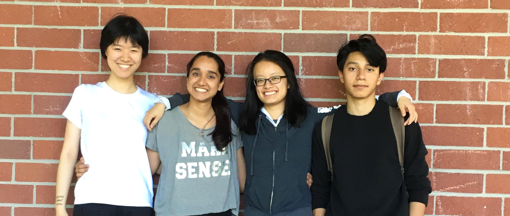| Dolly Ye | Shraddha Agrawal | Aria Chang | Axel A Hernandez | Rhys Li(not here) |
StarCraft II

As defined on the Blizzard website (the company that develops the game):
StarCraft II: Wings of Liberty is the long-awaited sequel to the original StarCraft, Blizzard Entertainment’s critically acclaimed sci-fi real-time strategy (RTS) game. StarCraft II: Wings of Liberty is both a challenging single-player game and a fast-paced multiplayer game. In typical real-time strategy games, players build armies and vie for control of the battlefield. The armies in play can be as small as a single squad of Marines or as large as a full-blown planetary invasion force. As commander, you observe the battlefield from a top-down perspective and issue orders to your units in real time. Strategic thinking is key to success; you need to gather information about your opponents, anticipate their moves, outflank their attacks, and formulate a winning strategy.
It combines fast paced micro-actions with the need for high-level planning and execution. Over the previous two decades, StarCraft I and II have been pioneering and enduring e-sports, 2 with millions of casual and highly competitive professional players. Defeating top human players therefore becomes a meaningful and measurable long-term objective.
From a reinforcement learning perspective, StarCraft II also offers an unparalleled opportunity to explore many challenging new frontiers:
- It is a multi-agent problem in which several players compete for influence and resources. It is also multi-agent at a lower-level: each player controls hundreds of units, which need to collaborate to achieve a common goal.
- It is an imperfect information game. The map is only partially observed via a local camera, which must be actively moved in order for the player to integrate.
PySC2 Environment
| 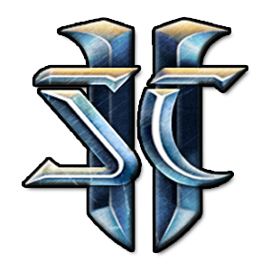 | 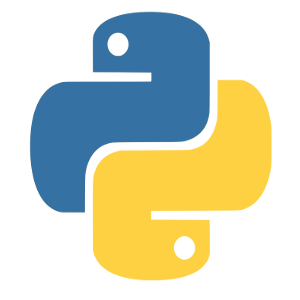 | ||
|---|---|---|---|
| StarCarft II | Google DeepMind | Python | TensorFlow |
PySC2 is DeepMind's Python component of the StarCraft II Learning Environment (SC2LE). It exposes Blizzard Entertainment's StarCraft II Machine Learning API as a Python reinforcement learning (RL) Environment. This is a collaboration between DeepMind and Blizzard to develop StarCraft II into a rich environment for RL research. PySC2 provides an interface for RL agents to interact with StarCraft 2, getting observations and rewards and sending actions.
The image below explains how SC2LE works combining StarCarft II API with Google DeepMind Libraries:
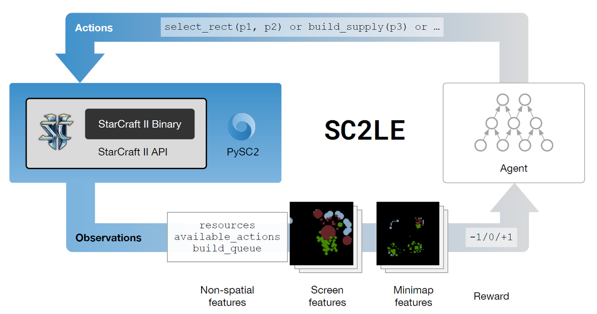
Fig. 1: SC2LE. Source: [1].
The two important components of the envrionment are:
- Mini-game maps
- Replays
Objectives
In Starcraft 2, no matter how good you are at combat or economy maximization, you cannot win a game without judicious selection of units, structures and buildings. We want to tackle the problem of build order optimization. Concretely, build order consists of finding concurrent action sequences constrained by unit dependencies and resource availability, such as creating a certain number of units and structures in the shortest amount of time possible.
Background Knowledge
Before starting to train a SC2 agent in the PySC2 environment, we went through a series of tutorials, which implement reinforcement learning agents using Pytorch and the OpenAI gym environment.
Essential Algorithms:
- Demystifying deep reinforcement learning
- Q-Learning with Tables and Neural Networks
- Two-armed Bandit
- Contextual Bandits
- Policy-based Agents
- Model-Based RL
- Deep Q-Networks and Beyond
- Visualizing an Agent’s Thoughts and Actions
- Partial Observability and Deep Recurrent Q-Networks
- Action-Selection Strategies for Exploration
- Asynchronous Actor-Critic Agents (A3C)
Q-Learning
Q-Learning agent will learn through experience, without a teacher (unsupervised learning). The agent will explore from state to state until it reaches the goal. We'll call each exploration an episode. Each episode consists of the agent moving from the initial state to the goal state. Each time the agent arrives at the goal state, the program goes to the next episode.

Q(s,a) is equal to the summation of immediate reward after performing action a while in state s and the discounted expected future reward. It represents how good a certain action is in given state. Q-learning agent seeks to maximize the Q-value (Q(s,a)).
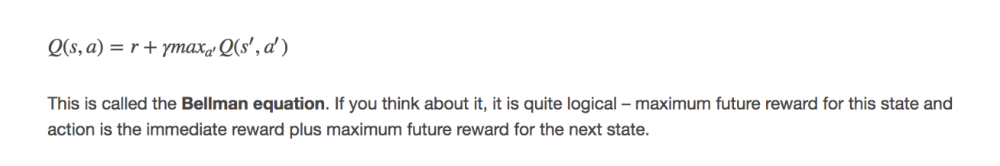
Bellman EquationHere are some implementations of Q-learning agents: Steven Brown's and Morvan Zhou's .
Deep Q-Network
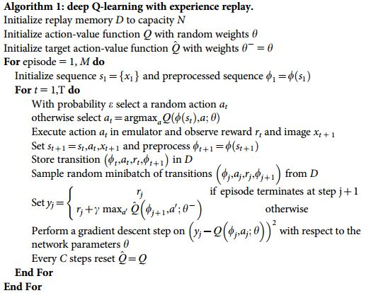
DQN's main innovation over Q-learning is that it has two separate networks: an action network and a target network. The action network selects action, its parameters are trainable.The target network is a history version of the action network, its parameters are untrainable. It is updated infrequently– every C steps.The target network computes the loss for every action during training. Why not use just use one network for both estimations? The issue is that at every step of training, the Q-network’s values shift, and if we are using a constantly shifting set of values to adjust our network values, then the value estimations can easily spiral out of control. In order to make training more stable, the target network’s weights are fixed, and only periodically or slowly updated to the primary Q-networks values.
DQN AlgorithmCheck out this tutorial on how to use PyTorch to train a DQN agent .
From Q-Learning to DQN
Q-Learning is a table of values for every state (row) and action (column) possible in the environment. Within each cell of the table, we learn a value for how good it is to take a given action within a given state. We start by initializing the table to be uniform (all zeros), and then as we observe the rewards we obtain for various actions, we update the table accordingly. our Q-table using something called the Bellman equation, which states that the expected long-term reward for a given action is equal to the immediate reward from the current action combined with the expected reward from the best future action taken at the following state.
In order to go from Q-learning to DQN, these are the following things we implement:
- Going from a single-layer network to a multi-layer convolutional network.
- Implementing Experience Replay, which will allow our network to train itself using stored memories from it’s experience.
- Utilizing a second “target” network, which we will use to compute target Q-values during our updates.
The transition is depicted here:
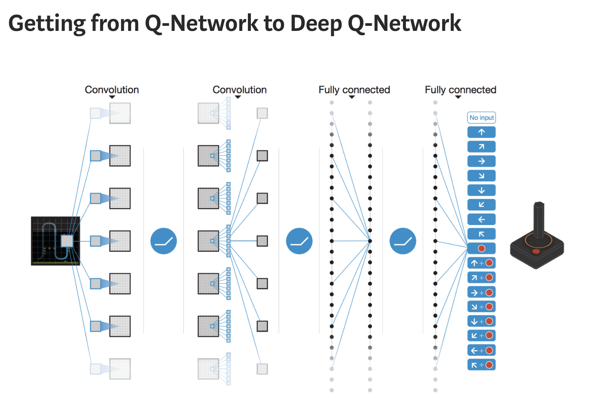
Fig. 2: Getting from Q-Network to Deep Q-Network. Source [4].Training RL agents
Objective
Inspired by Atari-Net, we addressed the build order problem with a reinforcement learning approach.However,instead of representing state as pixels, we select a set of features to represent the game state by calling the PySC2 api. Our agents were trained in the PySC2 environment.
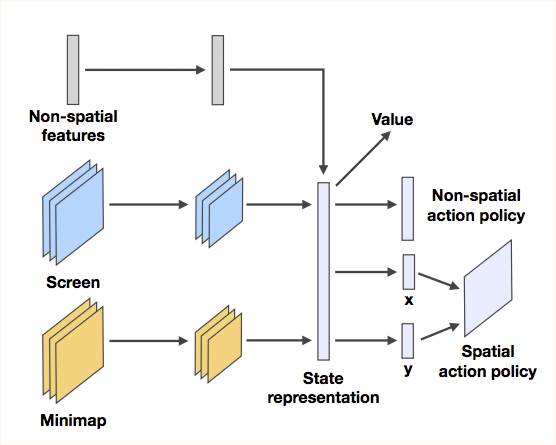
Fig. 3: Atari-Net. Source [1].Given the time and resources we have available, our definition of success comes down to beating the built-in StarCraft II bot on a minimap while running Terran against a fixed race. We achieved initial success with SupremeBot (Q-learning) and mixed results with the DQN bot.
Challenge
The biggest challenge that the StarCraft AI community faces is a good reward function. The easiest approach would be using the game score. One drawback of using game score is that the trained agent might be prone to maximizing production at every time step instead of launching strategic offenses that entails temporary setbacks for greater ultimate reward. We experimented with a second reward function: punish the agent for gathering more resources than needed.To this end, we measured the growth of the minerals and gas and calculated whether the rate of resource accumulation exceeds building capacity.
Our agents
Supreme Bot
Supreme bot is a Q-learning agent that uses a Q-table to store Q-value for every state (row) and action (column) possible in the environment.

Building upon Steven Brown's refined agent, we expand the action space of the agent:
- Building tech lab, which allows production units to build advanced army units.
- Building reactors, which “lengthens the build queue by three slots and allows two units to be built simultaneously” (starcraft wikia).
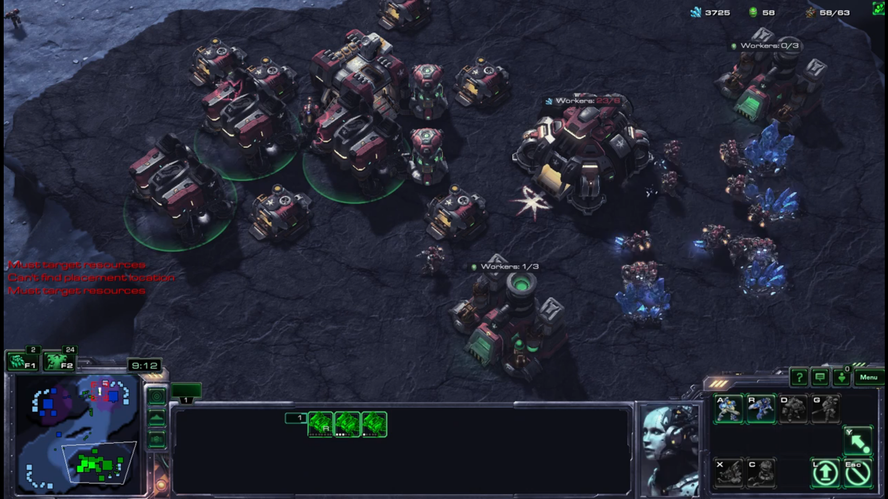
DQN Bot
PySC2 api provides critical information, such as reward and episode, an agent gets after performing an action, which makes DQN especially suitable for the task. A Starcraft DQN agent observes the current state of the environment and chooses an action, the environment transitions to a new state, and also returns a reward that indicates the consequences of the action. We encode six pieces of information as our state: whether the player can move, where the player is located, supply depot count,barracks count, supply limit and army supply.We passed the state into the neural network, which, after training, would return an action that yields the highest expected reward.
A highlight of DQN is the usage of experience replay. We created a replay memory class that stores sequences of state, action, next state, and rewards that the agent observes. By sampling from the replay memory randomly, the transitions that build up a batch are decorrelated. It has been shown that this greatly stabilizes and improves the DQN training procedure. The magic of DQN happens inside the ‘optimize’ method, which performs a single step of the optimization. It first samples a batch, concatenates all the tensors into a single one, computes Q(st,at) and V(st+1)=maxaQ(st+1,a), and combines them into our loss. Aside from the neural network, we hard-coded 9 actions and conditions to perform certain action into the DQN bot.
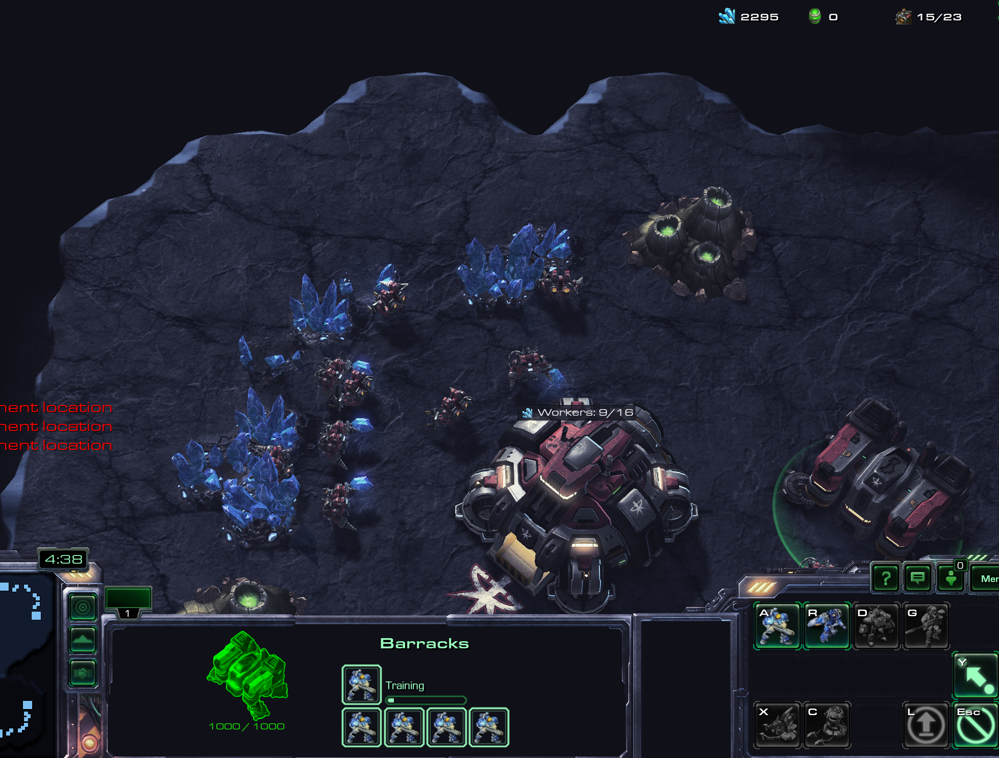
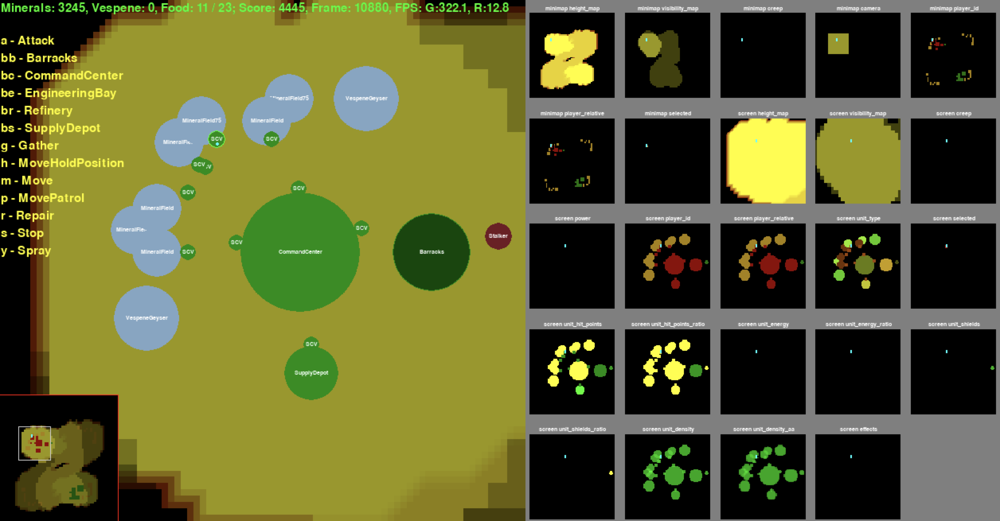
Evaluation
Supreme Bot
With the additional actions, “build reactors” and “build tech labs”, after running 97 episodes, we obtained the following results. After adding all the actions in to the agent, we are able to get data that more accurately reflects the learning process of the agent. With this final bot, we made improvements and solved most of the issues listed in our previous model. In SupremeBot 2.0, the game runs much faster and the win rate steadily increases as the loss rate decreases at a steeper slope compared to the win rate in this bot and the loss rate in the previous bot. Due to time sensitivity, we are not able to run more episodes, but we expect that after around 300 more games of learning, SupremeBot will beat the result achieved by Steven Brown’s refined agent. We will continue improving on this model and document our findings and source codes on github. Once we obtain enough substantial success, we will work on a research paper to publish our results in an academic setting.
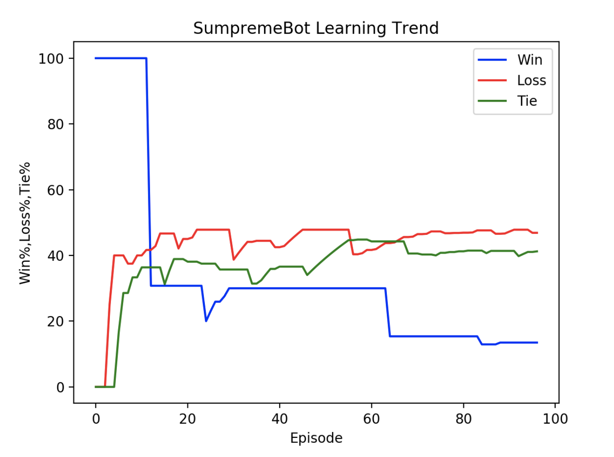
DQN Bot
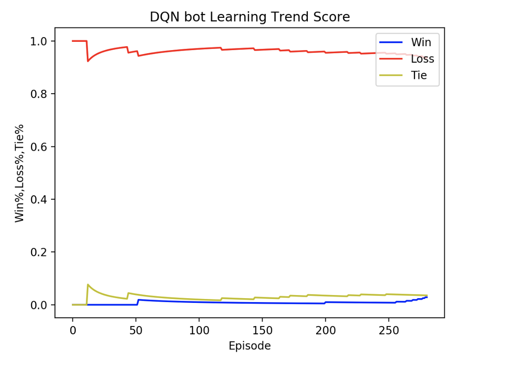
The result was unsatisfactory due to the limited number of actions we were able to hard-code so far. Improvements can be made in two main directions:
- Cherry-pick important and decorrelated observation about game state and feed them into the ‘state’ tensor.
- Hard-code more actions that are in sensible order.
Journey
We came across several challenges and new ideas. This is a brief of our journey: Our original plan was to use parsed replay data to train the agent using NNs to learn strategies. It would intake information about the state and output abstracted actions that the agent would perform. However, we faced troubles parsing the data in the right way. Primarily, the initial data set of raw replays we found, the SC2LE dataset, was not encoded correctly for the updated version of SC2. Using sc2reader, we were able to correctly parse replay data only for raw replays that were saved before early 2016. We were able to collect slightly over 1,000 parsed replays among all 3 races using the sc2reader library. This took a huge portion of our time, and once we started implementing the NN it was already week 6. Due to the time constraint and the fact that we lacked a working agent, we did not have a concrete plan of how to map the actions returned by the replay data to those executable by the agent. At this point we decided to split the work, where two of us continued to implement a NN, while others began implementing a DQN bot. With the NN, we decided to use recurrent neural network given the sequential nature of the problem: an agent should learn what to do at specific states in the game based on previous actions,states and rewards. We tried to implement an LSTM RNN using Pytorch and Tensorflow, but we ran into trouble when dealing with the dimensionality of the input since we had data that all had different number of states, ranging from 100 states in the game to 5000 states. We tried batching the data and padding the states with 0’s in order to input the same size of states per batch. We reached the point where the RNN was capable of producing a forward pass but unable to correctly perform backpropagation. Unfortunately, this was very late in the quarter (week 8) and our DQN implementation was working better. So in order to wrap up the project before the quarter ended, we had to drop the RNN and focus on finishing the agent using Q-Table.
Results
Due to time and resource constraint, we fell short of DeepMind's results. We focused more on reading research paper, learning about RL agorithms, deep learning libraries rather than building the bot from the beginning.
Building a StarCraft2 bot is learning about artificial intelligence in the wild while picking up the technogy needed to train the bot quickly. We learned how to break a complex problem down, weigh pros and cons of different approaches to a problem and prototype quickly. In the future, we plan to explore how to expand the action space of the agent without hard-coding and combine different models for one agent. This project was developed during the ECS 170:Artificial Intelligence Course at UC Davis, Spring 2018. Thank you Professor Josh McCoy for giving us a great introduction to world of AI.
References
- Vinyals, O., Ewalds, T., Bartunov, S., Georgiev, P., Vezhnevets, A. S., Yeo, M., … Tsing, R. (2017). StarCraft II: A New Challenge for Reinforcement Learning, link
- Simple Reinforcement Learning with Tensorflow series, Arthur Juliani, link (Accessed: 2017/12/11)
- Volodymyr Mnih, Adria Puigdomenech Badia, Mehdi Mirza, Alex Graves, Timothy P Lillicrap, Tim Harley, David Silver, and Koray Kavukcuoglu. Asynchronous methods for deep reinforcement learning. ICML, 2016, link
- Szepesvári, C. (2010). Algorithms for reinforcement learning. Synthesis lectures on artificial intelligence and machine learning, link
- Mnih, V., Kavukcuoglu, K., Silver, D., Graves, A., Antonoglou, I., Wierstra, D., & Riedmiller, M. (2013). Playing Atari with Deep Reinforcement Learning, 1–9, link